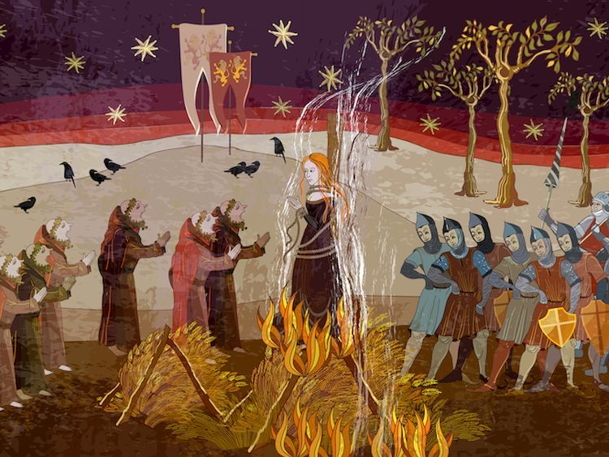
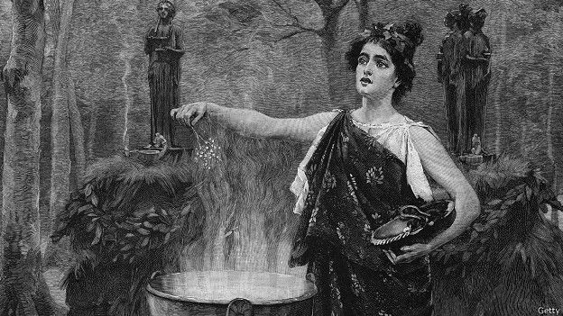
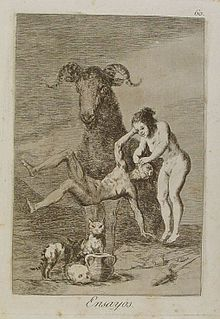

Pídele a cualquier niño occidental que dibuje una bruja probablemente el resultado será una imagen conocida: muy posiblemente una fea bruja nariguda con un sombrero puntiagudo sobre una escoba o revolviendo un caldero. ¿De dónde salió esta imagen?
La respuesta es más impresionante y compleja de lo que podría pensarse. Las brujas tienen una historia larga y elaborada.
Entre los siglos XV y XVII, en Europa y América, principalmente, se llevó a cabo la denominada Caza de Brujas , una época en donde muchas personas, principalmente mujeres fueron ejecutadas por la iglesia en la horca o calcinadas hasta la muerte, tras ser acusadas de practicar la brujería. En nuestros días, esto es considerado una barbarie, pues como la historia de las Brujas de Salem nos enseñó, muchas fueron acusadas y condenadas injustamente.

Generalmente, las acusaciones derivaban principalmente cuando una mujer demostraba tener conductas que no encajaban con los estereotipos de género propios de la época, cuando alguna cuestionaba a la autoridad, a Dios o que incluso, mostraba inteligencia para curar enfermedades utilizando brebajes de hierbas o para cualquier materia. En aquella época, estaba mal visto que alguna mujer utilizara sus virtudes, pues eran sólo vistas como una máquina de tener hijos y nada más.
Sin embargo esto no siempre fue así. Las religiones modernas comenzaron a cuestionar la práctica de la "magia" a partir de que esta fue tajantemente prohibida por la Biblia, principalmente en el antiguo testamento, en el Levítico 19:26 con la frase "no realizaréis adivinación ni magia" y en el Éxodo 22:17 que establece la pena de muerte para quien así lo haga "Los magos no los dejarás vivir", que fue tomada, literalmente por la iglesia en la quema de brujas.
Sin embargo, mucho antes de ser mencionada en la Biblia, todas las culturas de la humanidad desde sus inicios han tenido una estrecha relación con la magia y en realidad, era percibida como algo bastante positivo y las mujeres que la practicaban, eran muy respetadas ya que eran concebidas como sabias.
Sus predecesores aparecen en la Biblia, en la historia del rey Saúl que consulta a la así llamada "bruja de Endor". También aparecen en el período clásico en la forma de "estirges", unas temibles criaturas aladas con forma de harpías o lechuzas que se alimentaban de la carne de bebés.

Medea, sobrina de Circe, a veces es retratada como una mujer con poderes sobrenaturales.
Circe, la hechicera de la mitología griega, era una especie de bruja capaz de transformar a sus enemigos en cerdos. Así era también su sobrina Medea. El mundo antiguo fue, pues, responsable del establecimiento de una serie de figuras retóricas que en los siglos subsiguientes serían asociadas a las brujas.
Sin embargo, no fue hasta comienzos del Renacimiento que nuestra percepción moderna de las brujas se formó realmente. Y un hombre de esa época hizo más que ninguno para definir la forma en que todavía nos imaginamos a las brujas: el pintor y grabador Alberto Durero.
La iniciación de la bruja
El antropólogo español Carmelo Lisón Tolosana escoge el caso de las Brujas de Zugarramurdi como ejemplo para explicar la iniciación a la brujería siguiendo la relación del proceso inquisitorial publicada en Logroño a principios de 1611, pocos meses después de realizarse el auto de fe en el que seis brujas y brujos fueron quemados vivos.
Según dicha relación, la iniciación a la brujería comienza desde muy temprano. Las brujas "maestras" sacan de sus camas por las noches a niños y niñas menores de cinco años, mientras sus padres duermen y los llevan volando al aquelarre. Si contaban lo que veían cada noche eran azotados por sus "maestras". Una de sus ocupaciones era guardar los sapos de los que las brujas obtenían los ungüentos que, entre otras cosas, les hacían volar. En principio no se les obliga a que abjuren de su fe porque son demasiado pequeños, por lo que son simplemente presentados al demonio, pero cuando cumplen los seis años, las brujas "maestras" los convencen para que renuncien a Cristo mediante golosinas y promesas de cosas fantásticas
La ceremonia de la apostasía comienza un par de horas antes del aquelarre cuando la bruja "maestra" despierta al "novicio", le unta con agua hedionda y verdinegra —obtenida de los sapos— manos, plantas de los pies, sienes, pechos y partes pudendas y lo transporta por el aire. Cuando llegan los espera el demonio sentado en su trono con figura entre hombre y macho cabrío —ojos grandes y espantosos; barba de cabra; manos corvas como las garras de las aves de rapiña; corona con cuernos pequeños y un cuerno muy grande saliéndole de la frente que ilumina la reunión de brujos y brujas— a quien la bruja "maestra" presenta a su discípulo con la frase: "Señor, éste os traigo y presentó".
A continuación el niño o la niña de rodillas repite la abjuración que va pronunciando el demonio.
"Reniega de Dios, de la Virgen, de todos los santos, del bautismo y confirmación, de ambas crismas, de sus padrinos y padres, de la fe y de todos los cristianos, fórmula teológica que reproduce en inversión el rito que parodia". Tras aceptar como su nuevo dios y señor a Satán que le conducirá al paraíso, el nuevo brujo o bruja realiza su primer acto de adoración ritual, "besándole la mano izquierda, después en la boca y en los pechos, encima del corazón y en las partes vergonzosas; luego se vuelve el demonio sobre su lado izquierdo, levanta la cola que es como la de los asnos y descubriendo esa parte fea, sucia y hedionda la da a besar al neófito, quien lo hace puntualmente. Satisfecho el nuevo señor por el ósculo infame le hace una marca con una uña de su mano izquierda en alguna parte del cuerpo, señal que le durará siempre y que al menos durante un mes le producirá dolor; también lo marca en la niña del ojo dejándole impresa la figura de un sapo, signo que le servirá para conocer a otros miembros de la secta". Después lo envían a holgar y bailar con los demás brujos jóvenes al son de tamborino y flauta.
Pero todavía no son plenamente brujos o brujas. Con los nuevos poderes que han obtenido están obligados a realizar maldades, dirigidos por su bruja maestra. Solo con el paso del tiempo estos brujos y brujas menores reciben la "dignidad" de poder hacer ponzoñas por ellos mismos mediante la bendición con la mano izquierda que les hace el demonio en el aquelarre.
Después le entrega los sapos vestidos que dio a su maestra cuando abjuraron de Cristo, y a partir de entonces ya podrán obtener de ellos el agua hedionda con la que se han de untar para volar al aquelarre y los polvos y ponzoñas para matar personas y ganado y para destruir frutos y cosechas.
"En adelante no tendrán necesidad de padrinos ni maestras, irán solos a las juntas nocturnas y serán admitidos a mayores secretos y maldades. Son ya brujos y miembros con pleno derecho de la secta; gozarán de interacción directa, personal y mutua con su dios y señor". Cuando se untan para volar recitan una frase que expresa la fusión con el demonio —lo que entre otras cosas les impide ver el Sacramento en el altar-.
Pacto con el diablo
Hacia el fin del siglo XV, numerosos europeos instruidos creían que las brujas existían, y que ellas corrientemente practicaban actividades diabólicas, como por ejemplo la magia negra o el mal de ojo. En esa época, esas personas creían pues que todas las brujas o casi todas ellas hacían un explícito pacto personal con el diablo, y que este pacto o acuerdo personal con el propio satanás, daba a la bruja en cuestión el poder de desarrollar maleficios, permitiéndole entrar al servicio del maligno.
Por lo dicho, obviamente las brujas rechazaban in totum la fe cristiana, y como consecuencia eran rebautizadas por el propio satán, como símbolo de sumisión. Luego de esta ceremonia, el diablo aplicaba entonces una marca (un estigma) sobre la bruja rebautizada; esta creencia estaba muy extendida en las clases dominantes y cultivadas de la época citada, incluso con bastante más fuerza que en las clases bajas. En efecto, las clases populares entonces tenían tendencia a centrar su atención en la capacidad de las brujas para perjudicar y para hacer daño, mucho más que sobre su posible asociación o unión con el maligno.
Llegado a este punto, convendría señalar que el pacto con el diablo es una noción o un concepto bastante antiguo, cuyo origen se remonta al Medioevo. A través de ese pacto o de ese acuerdo, ambas partes se comprometían a respetar una especie de contrato jurídico, que obligaba al diablo a abastecer de riquezas y de poderes a la bruja, quien a cambio prometía sumisión, y se comprometía a entregar su alma después de su muerte. La cuestión de los vuelos nocturnos, de la posible transformación en algún animal, y de las reuniones junto a una figura sobrenatural (macho cabrío), también formó parte de manera temprana de lo que podríamos llamar "creencias sobre brujas". Por el contrario, la asociación de las brujas con el maligno, con el crimen, y con la sexualidad, fue una teoría demonológica algo más tardía, y que se elaboró poco a poco en el correr del siglo XVI
Los ingredientes del sabbat (la propia denominación y su descripción), comprendían un culto organizado consagrado y devotos a demonios, nombrados Diane, Hérodiade, y Lucifer. La presencia de estos bajo una forma semianimal, las orgías, la profanación de los sacramentos, fueron ideas y creencias elaboradas bajo la influencia de los teólogos y los inquisidores de mediados del siglo XIII a mediados del siglo XV, y difundidas a través de tratados de demonología, como por ejemplo el Malleus maleficarum, o como los predicamentos de San Bernardino de Siena, luego confirmados por los miembros laicos de los tribunales de justicia o de los parlamentos.
Las acusadas de brujas en esa época, fueron forzadas a suscribir o a ratificar, bajo tortura o presión psicológica, a ese marco de creencias y ese estado de cosas, y sus confesiones así confirmaban, a ojos de muchos, la validez de los hechos relatados y la existencia de los poderes ocultos mencionados, contribuyendo así a difundir estas suposiciones.

Grabado titulado Ensayos de la serie Los Caprichos (1799) de Francisco de Goya. "La imponente figura de Satán como macho cabrío vigila mudo a una joven bruja que practica sus primeros experimentos suspendiendo en el aire a un hombre que parece asustado; a los pies del buco aparece una olla de las que se mencionan en [el auto de fe] de Logroño [de 1610]" (Carmelo Lisón, pág. 257)